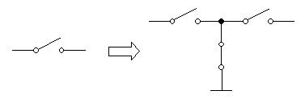

Troubleshooting noise problems
During test circuit development, you may encounter one or more of the following problems:
- A correctly specified filter does not reduce the unwanted signal as required.
- A relay does not completely disconnect a signal.
- A weak signal shows excessive noise.
- A DC reference voltage has high frequency spikes.
Such problems are likely to be caused by poor isolation or cross-talk.
To correct these problems, consider using the following techniques:
- Change the position of components or cables.
- Physically separate input and output lines.
- Use coaxial cables to protect sensitive signals.
- Ensure that all ground connections are as short as possible.
- Increase the size of the digital and analog ground planes.
- Add bypass capacitors.
- Use guard lines to shield voltage force and sense lines.
- Consider adding relays as shown below:The configuration as shown above is always recommended for solid state relays that exhibit a longer operational life and short switching times but often a higher crosstalk than mechanical relay: In open state of the circuitry, the left and right side are isolated from each other by the closed connection to ground.
